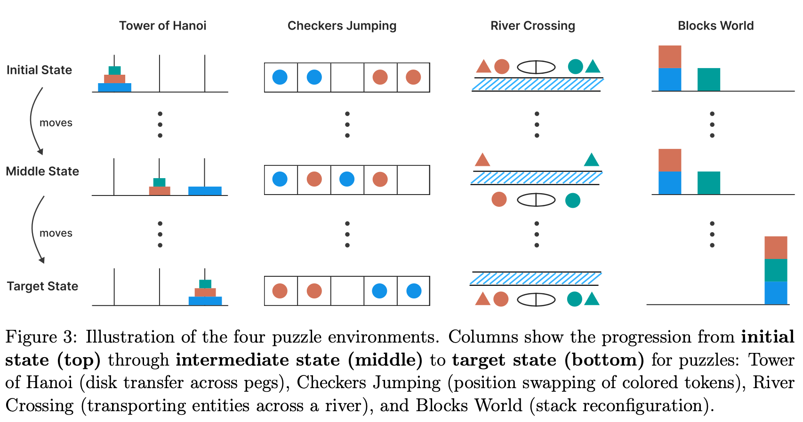
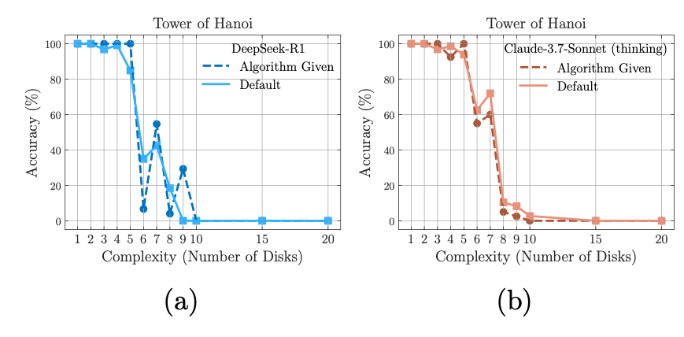
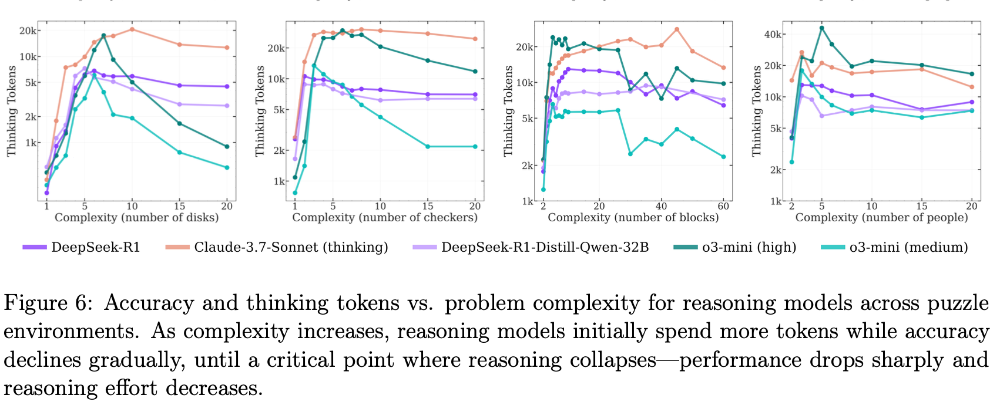
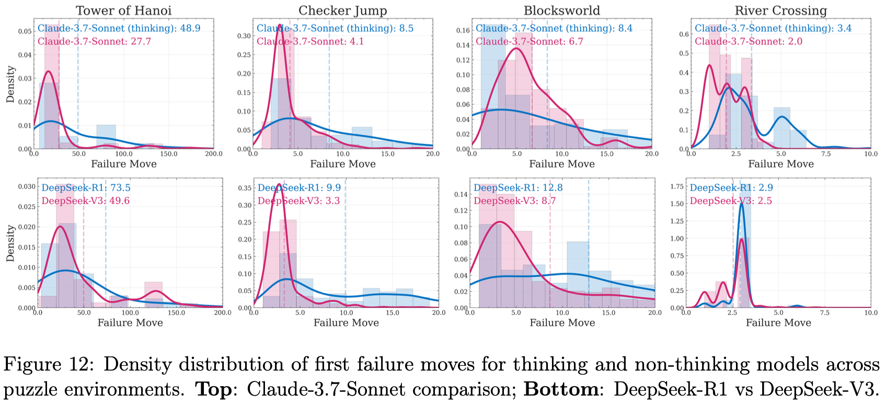

Important: The “comment paper” I referenced from Anthropic researchers was actually satire written by Alex Lawsen, not genuine research. I apologize for not catching this before our journal club discussion and initial blog post publication. I was alerted to this error by a colleague at Anthropic, and I’m grateful for the correction. The original satirical piece can be found here: When Your Joke Paper Goes Viral.
The satire was effective precisely because it articulated legitimate methodological concerns that many researchers share about the Apple paper. However, I should have verified the source more carefully. This correction does not invalidate our substantive critiques of the Apple paper’s experimental design and methodology. Those critiques stand independently.
I’ve left the original discussion of the “rebuttal” below intact as a record of what was discussed, but readers should understand it was responding to satire, not official research. This serves as a valuable reminder about source verification.
Why This Paper
The question of whether large reasoning models (LRMs) can actually reason has become increasingly contentious as these models seem to show impressive performance on various benchmarks. However, several recent papers have challenged the notion that chain-of-thought prompting and extended reasoning traces represent genuine reasoning capability. “The Illusion of Thinking” by Apple Research contributes to this debate with a more thorough and comprehensive experimental design compared to many other papers in this space.
The paper’s approach of using parametrically controlled puzzles to prevent memorization and address potential data contamination represents a thoughtful attempt to isolate reasoning capabilities from pattern matching. This methodological choice aligns with growing concerns in the field about whether impressive benchmark performance reflects genuine problem-solving ability or pattern-matching.
Paper Summary

The Apple Research team designed experiments using 4 types of logic puzzles: Tower of Hanoi, Checkers Jumping, River Crossing, and Blocks World. These puzzles can be controlled parametrically in terms of complexity, allowing the researchers to systematically increase difficulty and observe how model performance degrades. The goal was to test whether LRMs demonstrate genuine reasoning capabilities when faced with problems that cannot be solved through memorization or pattern matching against training data; note that the authors did not explicitly address whether these puzzles were free from data contamination issues.
The paper includes a literature review covering several key challenges in LLM reasoning research. Among the issues discussed are overthinking (where models generate excessive reasoning without improvement), unfaithfulness of reasoning traces to actual model computation, training distribution gaps between verification and generation, and the difference in inference compute budgets between standard models and thinking models. Given these compute budget differences, pass@k becomes a particularly relevant metric to consider. Pass@k measures the probability that at least one correct solution appears among k generated samples—for instance, if a thinking model uses 10k tokens per attempt while a non-thinking model uses 1k tokens, comparing pass@1 for the thinking model against pass@10 for the non-thinking model provides an apples-to-apples computational budget comparison. This framing is especially important when one model type invests significantly more compute per individual generation.
The experimental design categorizes puzzle difficulty into three regimes: easy, moderate, and hard. Across these regimes, the authors observe dramatic accuracy drops after certain puzzle difficulty thresholds.

Figure 4 presents the core empirical findings, comparing thinking models (Claude 3.7 Sonnet with thinking, DeepSeek-R1) against non-thinking counterparts across all four puzzles. The results show cliff-like performance drops as complexity increases: Tower of Hanoi and Checker Jumping maintain high accuracy through only 3-4 steps before collapsing to near-zero; Blocks World degrades more gradually; and River Crossing fails almost immediately after the simplest cases. Critically, thinking models show minimal advantage over non-thinking models—the curves largely overlap across all puzzles, suggesting extended reasoning traces provide little benefit for these tasks.

One of the paper’s most interesting findings comes from Section 4.4, where researchers provided models with the exact solution to Tower of Hanoi puzzles. Despite having access to the correct answer, models still failed at similar rates to when they solved the puzzles without assistance. Here’s the prompt the authors used (Appendix A.2):
Here is a pseudocode of recursive algorithm to solve the puzzle:
ALGORITHM Solve(n, source, target, auxiliary, moves)
// n = number of disks to move
// source = starting peg (0, 1, or 2)
// target = destination peg (0, 1, or 2)
// auxiliary = the unused peg (0, 1, or 2)
// moves = list to store the sequence of moves
IF n equals 1 THEN
// Get the top disk from source peg
disk = the top disk on the source peg
// Add the move to our list: [disk_id, source, target]
ADD [disk, source, target] to moves
RETURN
END IF
// Move n-1 disks from source to auxiliary peg
Solve(n-1, source, auxiliary, target, moves)
// Move the nth disk from source to target
disk = the top disk on the source peg
ADD [disk, source, target] to moves
// Move n-1 disks from auxiliary to target
Solve(n-1, auxiliary, target, source, moves)
END ALGORITHMTo solve the entire puzzle of moving n disks from peg 0 to peg 2:
- Initialize an empty list ‘moves’
- Execute Solve(n, 0, 2, 1, moves)
- The ‘moves’ list will contain the complete solution
Note: When executing this pseudocode, track which disk is currently on top of each peg. The disk IDs in the moves list should correspond to the actual disk being moved.
You can use this algorithm as a scratchpad to help you solve the problem step by step.
The paper includes analysis of reasoning traces through various figures. Figure 6 shows the relationship between thinking tokens and puzzle complexity, revealing that token consumption actually decreases after reaching certain difficulty levels. Figure 7 examines when in the solution sequence models make their first errors, showing that in easier Tower of Hanoi instances, models generate correct solutions early but make errors later, while the opposite pattern emerges at higher difficulties.
Discussion
Experimental Design Issues
While this paper makes valuable contributions to the reasoning debate, we have several methodological concerns. The most fundamental issue relates to how difficulty is characterized across the puzzle types. The authors control complexity parametrically but never explicitly discuss the inherent difficulty differences between puzzle types. This becomes problematic when comparing results across puzzles and attempting to draw general conclusions about reasoning capabilities.
The regime classifications (easy, moderate, hard) appear to be defined post-hoc based on model performance rather than on any independent measure of puzzle difficulty. The paper provides no scientific or statistical criteria for these boundaries. Plus, this approach does not add particular value to their conclusions either.
Missing Qualitative Analysis of Reasoning Traces


The treatment of reasoning traces is a bit disappointing. While Figure 6 shows that thinking token consumption decreases after certain difficulty thresholds, the paper never reveals qualitative characteristics of these traces. We’re left to speculate whether models are giving up, attempting exhaustive search that fails, or trying heuristic approaches that don’t work. Figure 13 in the appendix contains raw versions of these plots with substantial error bars, suggesting Figure 6 may be somewhat misleading in its cleaned-up presentation. Throughout the paper, results from all models are not consistently shown, raising concerns about potential cherry-picking.
The distributional analysis in Figure 7, which is summarized in the paper’s prominent Figure 1, reveals far more complexity than the summary statistics suggest. In Tower of Hanoi puzzles at easier difficulties, models can generate correct sequences early but accumulate errors later. At higher difficulties, this pattern reverses—models correct earlier mistakes as they progress. Understanding this behavior requires examining actual reasoning traces, which the paper doesn’t provide. The puzzles also exhibit different distributional patterns without explanation, leaving important questions unanswered.
The Tower of Hanoi Solution Experiment
Section 4.4 contains perhaps the paper’s most important finding, yet interestingly it’s also the least explored. When given exact solutions for Tower of Hanoi, models achieved similar accuracy to solving without assistance. This is a remarkable result that deserves deeper investigation, but the authors only tested this on Tower of Hanoi and not the other three puzzle types. This matters because Tower of Hanoi consistently shows different results than the other puzzles throughout the paper. We suspect this may reflect data contamination issues or the puzzle’s recursive structure, where difficulty at the \(n\)th step equals difficulty at the \(n+1\)th step. Additionally, the prompt apparently tells models they “can” use the provided solution rather than forcing them to use it—a subtle but potentially important distinction.
The constant-difficulty nature of Tower of Hanoi makes these failures particularly puzzling. If a model correctly executes the sequence at early steps, it should maintain that correctness at later steps since the difficulty remains constant and no memorization is required. To use a programming analogy, finding the computation correct at i=0 but incorrect at i=100 in what amounts to a for loop would be unacceptable in traditional software, and suggests something other than systematic reasoning is occurring.
Unreliable Performance at Higher Cost

Figure 12 raises serious practical concerns about thinking model reliability. The distribution of first failure moves shows much higher variability for thinking models compared to non-thinking models. This has troubling implications for real-world deployment: thinking models are simultaneously less reliable and more expensive to run. Users who don’t know the correct answer to their questions (the typical use case) might believe thinking models are more thoughtful or intelligent based on benchmark results, yet these models demonstrate less stable and more unpredictable performance in practice. This disconnect between benchmark performance and actual reliability—combined with higher computational costs—contradicts the value proposition of reasoning models and warrants deeper investigation into when and why this instability occurs.
Figure 13 reveals enormous variation in thinking token expenditure, sometimes showing cases where models fail quickly with few tokens and other cases where they consume massive token counts before failing. The characteristics of reasoning traces in these different failure modes would be very interesting, but the authors chose not to investigate this qualitatively.
Discussion of the Satirical “Rebuttal” (See Correction Above)
While satirical in intent, the comment paper did articulate one legitimate methodological concern: the distinction between “can’t solve” and “I will stop here” given token limits. Models operating under computational constraints may fail not because they lack reasoning capability, but because they’ve exhausted their budget. However, this doesn’t fully explain the Apple paper’s findings, particularly the failure modes when exact solutions were provided.
Separately, the Apple paper doesn’t adequately address difficulty variations across puzzle types. River Crossing is NP-hard, which may explain why models particularly struggle with it compared to other puzzles. This asymmetry across puzzle types complicates the paper’s broader claims about reasoning capabilities.
Conclusion
Despite the methodological concerns raised here, “The Illusion of Thinking” makes an important contribution to the reasoning debate. The use of parametrically controlled puzzles represents a meaningful attempt to isolate reasoning from memorization, and the finding that models fail even when given exact solutions (Section 4.4) remains one of the most striking results in recent evaluation work. The paper also reveals that reasoning models show unreliable performance with high variability, yet cost significantly more to run. Until we better understand when and why these models fail unpredictably, their practical value proposition remains unclear.
If you found this post useful, you can cite it as:
@article{
austinmljc-2025-illusion-of-thinking,
author = {Hongsup Shin},
title = {The Illusion of Thinking: Understanding the Strengths and Limitations of Reasoning Models via the Lens of Problem Complexity},
year = {2025},
month = {11},
day = {20},
howpublished = {\url{https://austinmljournalclub.github.io}},
journal = {Austin ML Journal Club},
url = {https://austinmljournalclub.github.io/posts/20251120_illusion_of_thinking/},
}